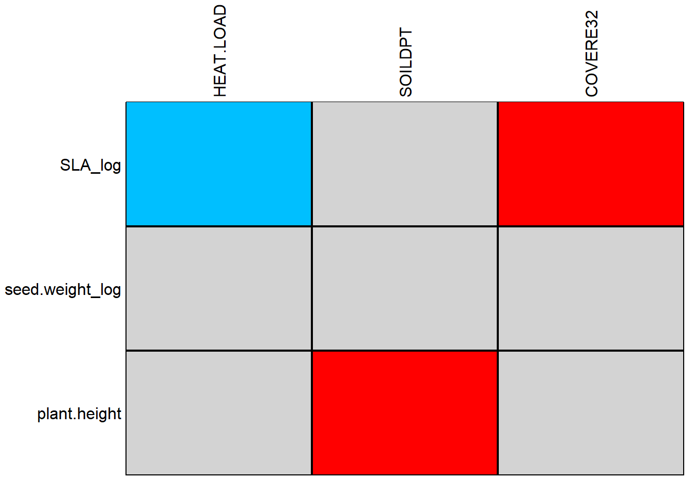
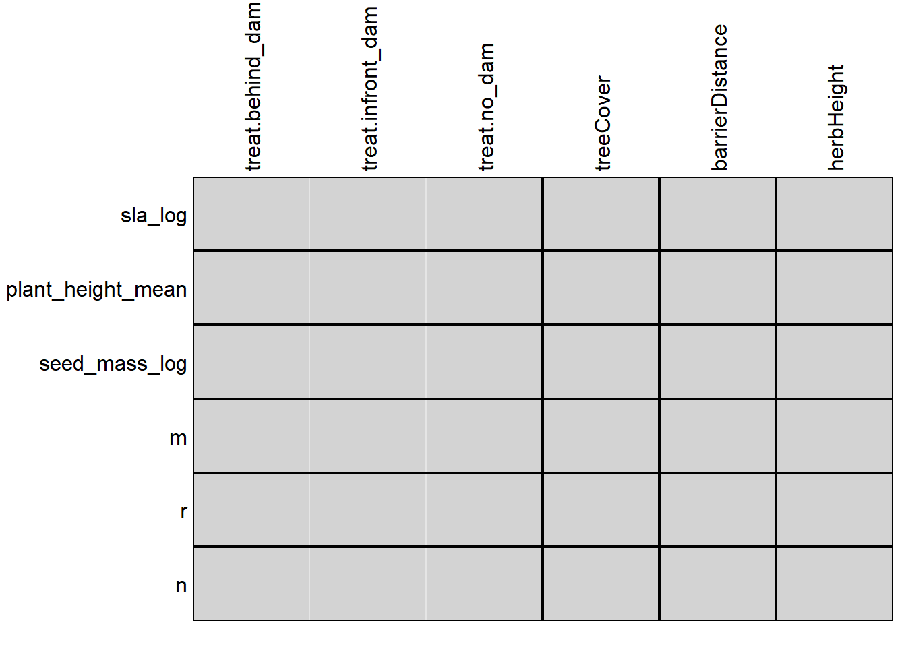
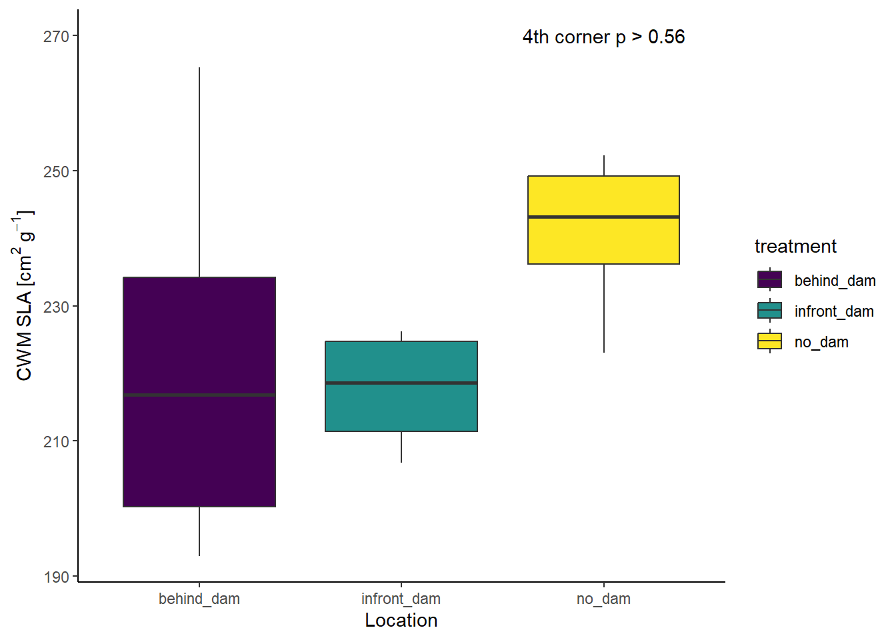

library(here)
library(tidyverse)
library(ade4)
rm(list = ls())Analysis of Ecological Data
Fourth-corner approach
1 Technichal University of Munich, TUM School of Life Sciences, Chair of Restoration Ecology, Emil-Ramann-Straße 6, 85354 Freising, Germany
 https://orcid.org/0000-0001-5372-4174
https://orcid.org/0000-0001-5372-4174


2 University of Applied Sciences Weihenstephan-Triesdorf, Institute of Ecology and Landscape, Am Hofgarten 1, Building A10, 85354 Freising, Germany
This tutorial uses Bello et al. (2021) and Zelený (2021)
A helpful textbook is ‘Numerical Ecology’ (Borcard et al. 2018) and ‘Multivariate Analysis of Ecological Data with ade4’ (Thioulouse et al. 2018)
1 Learning objectives
- Use the fourth-corner approach as an alternative to linear modelling.
2 Preparation
2.1 Load libraries and functions
We need the ade4 package of Dray & Dufour (2007) to use the fourth-corner approach of Legendre et al (1997) and Dray & Legendre (2008)
2.2 Load data
load(url('https://raw.githubusercontent.com/zdealveindy/anadat-r/master/data/vltava.RData'))
species_vltava <- vltava$herbs$spe
sites_vltava <- vltava$env
traits_vltava <- vltava$herbs$traits %>%
mutate(
seed.weight_log = log(seed.weight),
SLA_log = log(SLA)
)
species_spain <- read_delim(
here::here("data", "raw", "bello_etal-2021", "chapter5", "speciesXplotsNE.txt"),
col_names = TRUE, delim = "\t", col_types = cols(.default = "?")
)
traits_spain <- read_delim(
here::here("data", "raw", "bello_etal-2021", "chapter5", "speciesXtraitsNE.txt"),
col_names = TRUE, delim = "\t", col_types = cols(.default = "?")
)
sites_spain <- read_csv(
here::here("data", "processed", "data_processed_sites_spain_4.5.csv"),
col_names = TRUE, col_types = cols(.default = "?")
)
species_ammer <- read_csv(
here::here("data", "processed", "data_processed_species_ammer_4.1.csv"),
col_names = TRUE, col_types = cols(.default = "?")
)
traits_ammer <- read_csv(
here::here("data", "processed", "data_processed_traits_ammer_4.1.csv"),
col_names = TRUE, col_types = cols(.default = "?")
)
sites_ammer <- read_csv(
here::here("data", "processed", "data_processed_sites_ammer_4.5.csv"),
col_names = TRUE, col_types = cols(.default = "?")
)3 Fourth-corner approach (species level)
3.1 Vltava dataset
This example directly follows the Vlatava example, in which we related CWM of SLA calculated from herb understory in the forest sites to canopy cover in the same sites as a proxy of the light available for the understory plants. We found a significant positive relationship, i.e. higher cover (less light) = higher SLA.
3.1.1 Preparation
In this exercise, we will calculate the same relationship, but using the fourth corner method, introduced by Pierre Legendre and colleagues (1997). The method is implemented in the package ade4.
Remember to remove the missing species from both species composition and trait matrices, since the function fourthcorner cannot handle them. Also, fourthcorner function expects that all objects representing data will be data frames, so better to convert data into them right at the beginning.
traits <- traits_vltava %>%
select(SLA_log) %>%
drop_na()
species <- species_vltava %>%
rownames_to_column(var = "plot.id") %>%
pivot_longer(-plot.id, names_to = "name", values_to = "value") %>%
semi_join(
traits %>%
rownames_to_column(var = "name"),
by = "name"
) %>%
pivot_wider(names_from = "name", values_from = "value") %>%
column_to_rownames(var = "plot.id")
sites <- sites_vltava %>%
select(COVERE32)3.1.2 Calculation of the fourth-corner approach
- Which model type, p-adjustment and nrepet is used?
fc_ade4 <- ade4::fourthcorner(
tabR = sites, tabL = species, tabQ = traits, modeltype = 6, # max test
nrepet = 999
)
fc_ade4Fourth-corner Statistics
------------------------
Permutation method Comb. 2 and 4 ( 999 permutations)
Adjustment method for multiple comparisons: holm
call: ade4::fourthcorner(tabR = sites, tabL = species, tabQ = traits, modeltype = 6, nrepet = 999)
---
Test Stat Obs Std.Obs Alter Pvalue Pvalue.adj
1 COVERE32 / SLA_log r 0.2124593 4.374136 two-sided 0.001 0.001 ***
---
Signif. codes: 0 '***' 0.001 '**' 0.01 '*' 0.05 '.' 0.1 ' ' 1 The fourth corner statistic r = 0.212, and the p value of it (calculated by max test, since the argument modeltype = 6) is significant.
3.1.3 Calculation with several traits
We can calculate the fourth corner for more than a single combination of trait and environmental variable. Let’s use all three traits available in vltava\(herbs\)traits, namely SLA, plant height and seed weight, and also choose three environmental variables which may have some relationship to them, namely heat load (combination of slope and aspect, indicating radiation income of the site), soil depth, and cover of canopy layer.
traits <- traits_vltava %>%
select(SLA_log, seed.weight_log, plant.height) %>%
drop_na()
species <- species_vltava %>%
rownames_to_column(var = "plot.id") %>%
pivot_longer(-plot.id, names_to = "name", values_to = "value") %>%
semi_join(
traits %>%
rownames_to_column(var = "name"),
by = "name"
) %>%
pivot_wider(names_from = "name", values_from = "value") %>%
column_to_rownames(var = "plot.id")
sites <- sites_vltava %>%
select(HEAT.LOAD, SOILDPT, COVERE32)Calculate the fourth-corner analysis:
traits_fc_ade4 <- fourthcorner(
tabR = sites, tabL = species, tabQ = traits, modeltype = 6, #max test
nrepet = 999
)
traits_fc_ade4Fourth-corner Statistics
------------------------
Permutation method Comb. 2 and 4 ( 999 permutations)
Adjustment method for multiple comparisons: holm
call: fourthcorner(tabR = sites, tabL = species, tabQ = traits, modeltype = 6, nrepet = 999)
---
Test Stat Obs Std.Obs Alter Pvalue
1 HEAT.LOAD / SLA_log r -0.16457740 -2.7348381 two-sided 0.008
2 SOILDPT / SLA_log r 0.20723646 3.5624032 two-sided 0.002
3 COVERE32 / SLA_log r 0.22867542 3.8983671 two-sided 0.001
4 HEAT.LOAD / seed.weight_log r -0.06877695 -1.4868862 two-sided 0.144
5 SOILDPT / seed.weight_log r 0.07439938 0.9311956 two-sided 0.356
6 COVERE32 / seed.weight_log r 0.10144684 1.4663460 two-sided 0.135
7 HEAT.LOAD / plant.height r -0.01429234 -0.2415423 two-sided 0.8
8 SOILDPT / plant.height r 0.24784528 3.1124013 two-sided 0.002
9 COVERE32 / plant.height r 0.16849585 2.4092168 two-sided 0.016
Pvalue.adj
1 0.048 *
2 0.014 *
3 0.009 **
4 0.54
5 0.712
6 0.54
7 0.8
8 0.014 *
9 0.08 .
---
Signif. codes: 0 '***' 0.001 '**' 0.01 '*' 0.05 '.' 0.1 ' ' 1 Note that the function automatically applies correction of P-values for multiple testing by Holm’s method (the last column, ‘Pvalue.adj’).
To plot the results, use:
plot(traits_fc_ade4)
# Plot also a scatterplot with lineTwo of the relationships are significant: plant height and soil depth (red = positive) and SLA and heat load (blue = negative). SLA and cover didn’t make it through the Holm’s correction.
3.2 Ammer dataset
rm(
list = setdiff(
ls(),
c("species_ammer", "species_spain", "traits_ammer", "traits_spain",
"sites_spain", "sites_ammer")
)
)
traits <- traits_ammer %>%
mutate(
seed_mass_log = log(seed_mass_mean),
sla_log = log(sla_mean)
) %>%
select(accepted_name, sla_log, plant_height_mean, seed_mass_log, m, r, n) %>%
drop_na()
species <- species_ammer %>%
semi_join(traits, by = "accepted_name") %>%
pivot_longer(-accepted_name, names_to = "plot", values_to = "value") %>%
pivot_wider(names_from = "accepted_name", values_from = "value") %>%
column_to_rownames(var = "plot")
traits <- traits %>%
column_to_rownames(var = "accepted_name")
sites <- sites_ammer %>%
select(id.plot, treatment, treeCover, barrierDistance, herbHeight) %>%
mutate(treatment = factor(treatment)) %>%
column_to_rownames(var = "id.plot")Calculate the fourth-corner analysis
m1 <- ade4::fourthcorner(
tabR = sites, tabL = species, tabQ = traits, modeltype = 6,
nrepet = 999
)
m1Fourth-corner Statistics
------------------------
Permutation method Comb. 2 and 4 ( 999 permutations)
Adjustment method for multiple comparisons: holm
call: ade4::fourthcorner(tabR = sites, tabL = species, tabQ = traits, modeltype = 6, nrepet = 999)
---
Test Stat Obs Std.Obs
1 treat.behind_dam / sla_log Homog. 0.37458718 0.1399965
2 treat.infront_dam / sla_log Homog. 0.26781102 0.6534913
3 treat.no_dam / sla_log Homog. 0.33709016 -0.7412974
4 treeCover / sla_log r 0.23971307 1.0089160
5 barrierDistance / sla_log r 0.10746037 1.0952758
6 herbHeight / sla_log r -0.19906700 -0.8394122
7 treat.behind_dam / plant_height_mean Homog. 0.08223929 -0.8904952
8 treat.infront_dam / plant_height_mean Homog. 0.01675109 -0.7656780
9 treat.no_dam / plant_height_mean Homog. 0.86845448 1.5169165
10 treeCover / plant_height_mean r 0.15136022 1.7797384
11 barrierDistance / plant_height_mean r -0.08642786 -0.9923235
12 herbHeight / plant_height_mean r -0.10923871 -1.3256159
13 treat.behind_dam / seed_mass_log Homog. 0.64717182 2.8498370
14 treat.infront_dam / seed_mass_log Homog. 0.14024310 -1.1452668
15 treat.no_dam / seed_mass_log Homog. 0.16371775 -1.3611612
16 treeCover / seed_mass_log r 0.29262324 1.2191187
17 barrierDistance / seed_mass_log r 0.04161937 0.3979943
18 herbHeight / seed_mass_log r -0.27169971 -1.1300432
19 treat.behind_dam / m Homog. 0.49120417 1.1109089
20 treat.infront_dam / m Homog. 0.15646826 -0.8117884
21 treat.no_dam / m Homog. 0.33942508 -0.2596912
22 treeCover / m r -0.06319523 -0.5027921
23 barrierDistance / m r 0.13512702 1.1173136
24 herbHeight / m r 0.13338077 1.1223905
25 treat.behind_dam / r Homog. 0.64823562 2.5577824
26 treat.infront_dam / r Homog. 0.10050154 -1.2336292
27 treat.no_dam / r Homog. 0.13506550 -1.2905755
28 treeCover / r r 0.39380073 1.7558552
29 barrierDistance / r r 0.12080048 0.6490660
30 herbHeight / r r -0.39998887 -1.7887227
31 treat.behind_dam / n Homog. 0.55564076 2.8068028
32 treat.infront_dam / n Homog. 0.15357421 -1.2067912
33 treat.no_dam / n Homog. 0.20721312 -0.7901296
34 treeCover / n r 0.41720346 1.6848917
35 barrierDistance / n r 0.29126594 1.7383060
36 herbHeight / n r -0.36599015 -1.4887022
Alter Pvalue Pvalue.adj
1 less 0.546 1
2 less 0.724 1
3 less 0.227 1
4 two-sided 0.393 1
5 two-sided 0.302 1
6 two-sided 0.492 1
7 less 0.28 1
8 less 0.09 1
9 less 0.925 1
10 two-sided 0.044 1
11 two-sided 0.402 1
12 two-sided 0.175 1
13 less 0.999 1
14 less 0.145 1
15 less 0.107 1
16 two-sided 0.265 1
17 two-sided 0.728 1
18 two-sided 0.317 1
19 less 0.829 1
20 less 0.228 1
21 less 0.454 1
22 two-sided 0.664 1
23 two-sided 0.3 1
24 two-sided 0.313 1
25 less 0.997 1
26 less 0.117 1
27 less 0.092 1
28 two-sided 0.077 1
29 two-sided 0.563 1
30 two-sided 0.066 1
31 less 1 1
32 less 0.132 1
33 less 0.222 1
34 two-sided 0.051 1
35 two-sided 0.089 1
36 two-sided 0.137 1
---
Signif. codes: 0 '***' 0.001 '**' 0.01 '*' 0.05 '.' 0.1 ' ' 1 plot(m1)
3.2.1 Plotting
sites_ammer %>%
ggplot(aes(x = treatment, y = cwm.abu.sla, fill = treatment)) +
geom_boxplot() +
scale_fill_viridis_d() +
annotate(geom = "text", x = 3, y = 270, label = "4th corner p > 0.56") +
labs(x = "Location", y = expression(CWM~SLA~"["*cm^2~g^-1*"]")) +
theme(
axis.line = element_line(color = "black"),
panel.background = element_rect(fill = "transparent")
)
4 Session info
sessionInfo()R version 4.4.1 (2024-06-14 ucrt)
Platform: x86_64-w64-mingw32/x64
Running under: Windows 11 x64 (build 22631)
Matrix products: default
locale:
[1] LC_COLLATE=German_Germany.utf8 LC_CTYPE=German_Germany.utf8
[3] LC_MONETARY=German_Germany.utf8 LC_NUMERIC=C
[5] LC_TIME=German_Germany.utf8
time zone: Europe/Berlin
tzcode source: internal
attached base packages:
[1] stats graphics grDevices datasets utils methods base
other attached packages:
[1] ade4_1.7-22 lubridate_1.9.3 forcats_1.0.0 stringr_1.5.1
[5] dplyr_1.1.4 purrr_1.0.2 readr_2.1.5 tidyr_1.3.1
[9] tibble_3.2.1 ggplot2_3.5.1 tidyverse_2.0.0 here_1.0.1
loaded via a namespace (and not attached):
[1] utf8_1.2.4 generics_0.1.3 renv_1.0.7
[4] stringi_1.8.4 hms_1.1.3 digest_0.6.36
[7] magrittr_2.0.3 evaluate_0.24.0 grid_4.4.1
[10] timechange_0.3.0 fastmap_1.2.0 rprojroot_2.0.4
[13] jsonlite_1.8.8 BiocManager_1.30.25 fansi_1.0.6
[16] viridisLite_0.4.2 scales_1.3.0 cli_3.6.3
[19] crayon_1.5.3 rlang_1.1.4 bit64_4.0.5
[22] munsell_0.5.1 withr_3.0.0 yaml_2.3.9
[25] parallel_4.4.1 tools_4.4.1 tzdb_0.4.0
[28] colorspace_2.1-0 vctrs_0.6.5 R6_2.5.1
[31] lifecycle_1.0.4 htmlwidgets_1.6.4 bit_4.0.5
[34] vroom_1.6.5 MASS_7.3-60.2 pkgconfig_2.0.3
[37] pillar_1.9.0 gtable_0.3.5 glue_1.7.0
[40] Rcpp_1.0.12 xfun_0.45 tidyselect_1.2.1
[43] rstudioapi_0.16.0 knitr_1.48 farver_2.1.2
[46] htmltools_0.5.8.1 labeling_0.4.3 rmarkdown_2.27
[49] compiler_4.4.1